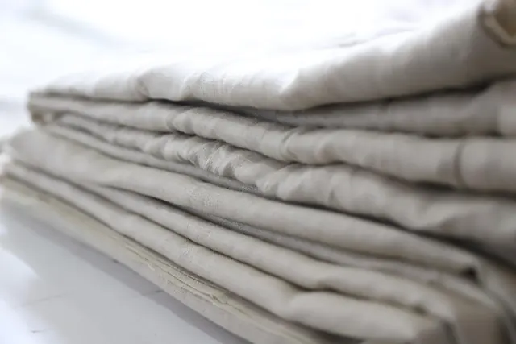

Ana sayfa / Blog
Yorgan, yastık ve uyku üzerine
Dükkânda en çok sorulanları kaynaklarıyla yazdık. Sağlık konusunda vaat yok; doğru bilgi ve doktorunuza danışma önerisi var.

Yün yorganda yatmanın faydaları: ne gerçek, ne abartı?
Yün yorgan neden sıcak tutar ama terletmez? Nem, ısı dengesi ve uyku üzerine araştırmalar ne diyor; neyi bilmiyoruz?

Pamuk yastığın faydaları ve kimlere uygun olduğu
Pamuk yastık neden serin tutar, ne kadar dayanır, kimler için doğru seçimdir? Silikon ve yünle dürüst bir karşılaştırma.

Silikon yorgan: avantajları, dezavantajları ve elyaftan farkı
"Silikon" yorganın içinde silikon yok, silikonla kaplanmış elyaf var. Silikon ile düz elyaf arasındaki fark, kimlere uygun olduğu ve bakımı.
"Yün enerji alır, fıtığa iyi gelir" sözleri: doğrular ve abartılar
Yün yorgan ve yün yatak hakkında yıllardır söylenenleri tek tek ele aldık: hangisi lifin gerçek özelliği, hangisi kanıtı olmayan bir inanış?
Yorgan seçimi rehberi: ölçü, ağırlık, dolgu ve mevsim
Yatağınıza hangi ölçü yorgan alınır? Kaç kilo olmalı? Yazlık, kışlık, dört mevsim farkı ne? Adım adım doğru yorgan.

Yastık seçimi: yan, sırt ve yüzüstü yatanlar için rehber
Yastığın yüksekliği ve sertliği uyku pozisyonunuza göre seçilir. Yan, sırt ve yüzüstü yatanlar için pratik ölçüler ve dolgu önerileri.
Alerjisi olanlar için yorgan ve yastık: toz akarı, yıkama ve kılıf
Toz akarı alerjisinde önemli olan dolgunun adı değil, ne sıklıkla ve kaç derecede yıkanabildiği. Pratik öneriler ve araştırmaların söyledikleri.

Yorgan yıkama ve bakım rehberi: yün, pamuk, silikon, tüy
Hangi yorgan makinede yıkanır, hangisi yıkanmaz? Havalandırma, kurutma, saklama ve güveye karşı koruma; dolguya göre tek tek.

Çeyiz rehberi: yorgan, yastık ve döşekte nelere dikkat etmeli?
Çeyize kaç yorgan, kaç yastık konur? Saten mi pamuklu mu? İşlemeli yorgan ne kadar önce sipariş edilmeli? Bir yorgancının listesi.

Bebek ve çocuk yorganı: hangi yaşta, hangi dolgu, nelere dikkat?
1 yaş altı bebeklerde yorgan ve yastık önerilmez. Ondan sonra hangi dolgu, hangi ölçü ve nasıl bakım? Güvenli uyku önerileriyle birlikte.

Yün yorgan ne zaman yenilenir? Hallaç, atma ve kabartma
Yün yorganınız ağırlaştı, ince yerler oluştu mu? Yenileme işaretleri, dükkânda yünün nasıl açılıp kabartıldığı ve hallaç geleneği.